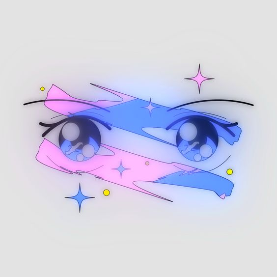

Hello my name is Erica Cruz. |
|
|
 |
I'm a Computer Science student who loves to play video games, listening to music and learning about code. I'm on the CAHSI Advocate team as the Web Developer. I also help as their graphic designer and work on flyers! Once I graduate, I’m interested in getting a job in UI/UX, maybe even Web Development but secretly I want to work in the gaming industry. I hear it’s really hard work and competitive to get into unfortunately but maybe one day I can be on a Gaming Software Development team. My favorite types of video games are roleplaying games. I like them because they’re more story oriented and it’s like living in a book and you are the main character. Lately I’ve been playing a game called League of Legends. It’s a super competitive game in which you fight other people. It can be tough sometimes, but it feels really satisfying when you are able to overcome the difficulty. I simply love music. If I meet a person who doesn’t like music or doesn’t enjoy listening to music, then I don’t think I can trust them. My favorite genres of music are electronic dance music. It seems like it’s only one type of genre, but there are many types of electronic music. There is drum and bass, house, techno, trance, dubstep and many more. The great thing about electronic music is that you can mix a lot of different elements from other genres to create unique sounds. This is a great example of electronic music blended with rock, funk and disco spacey elements. https://www.youtube.com/watch?v=TlhIk7iPU9o Thank you for reading and learning a little bit about me. 😊 |